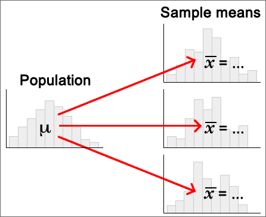

If you don't want to print now,
Sampling mechanism
The mechanism of sampling from a population explains randomness in data.
In practice, we must use a single sample to find information about the population.

Parameters and statistics
We usually focus attention on a small number of numerical characteristics.

Variability of sample statistics
The variability in random samples also implies sample-to-sample variability in sample statistics.

Distribution of the sample mean
The mean of a random sample of n values is a random quantity. Its distribution is centred on the population mean but its spread is lower then that of the population distribution.
Centre and spread of the sample mean's distribution
We can be more precise. If the population has mean µ and standard deviation σ, then the mean of a sample of n values,  ,
has a distribution with mean and standard deviation:
,
has a distribution with mean and standard deviation:
 = μ
= μ
 =
= 
Shape of the mean's distribution
Whatever the shape of the population distribution,
 = μ
= μ  =
= 
However skewness in the population distribution leads to some skewness in the distribution of the mean.
Samples from normal populations
When the population distribution is normal, the sample mean also has a normal distribution.
 ~ normal (μ ,
~ normal (μ ,  )
)

Means from non-normal populations
Irrespective of the shape of the population distribution,
 = μ
= μ  =
= 
If the population is not a normal distribution, the sample mean does not have a normal distribution. However the Central Limit Theorem states that...
For most non-normal population distributions, the distribution of the sample mean becomes close to normal when the sample size increases.

Need for multiple values to assess variability
We usually need to make two or more measurements of a variable to get any information about its variability. A single value contains no information about the quantity's variability.
Achieving the impossible?
Fortunately, we do not need multiple sample means to assess the variability of a sample mean. Its distribution can be estimated from a single sample using
 = μ
= μ
 =
= 
The distribution of the mean can be approximated with a normal distribution with this mean and standard deviation, if we replace µ
and σ with  and s.
and s.

Independent random samples
The formula for the standard deviation of a sample mean,
 =
= 
is only accurate if the sample values are independent.
Dependent random samples
When sample values are correlated with each other, they are said to be dependent and the formula

can badly underestimate the variability (and hence accuracy) of the sample mean of dependent random samples.
Always check that a random sample is independently selected from the whole population before using the formula for the standard deviation of the sample mean.
Sampling with replacement from finite populations
When a random sample is selected with replacement from a finite population, the sample values are independent and the standard deviation of the sample mean is again
 =
= 
Note however that the population standard deviation, σ, uses divisor N, the number of values in the population, rather than (N - 1).

Sampling without replacement from finite populations
When a sample is selected without replacement, successive values are no longer independent — if a large value is selected, it cannot be selected again, so the next value will tend to be lower.
For sampling without replacement, a different formula should be used for the standard deviation of the sample mean:

The quantity (N - n) / (N - 1) is called the finite population correction factor. It can usually be ignored if only a small fraction of the population is sampled (say under 5%).
A sample proportion has a distribution
If a categorical data set is modelled as a random sample from a categorical population, the sample proportions must be treated as random quantities — they vary from sample to sample.

The population proportion in a category is called its probability, and is often denoted by π. The corresponding sample proportion is usually denoted by p.
| Sample Statistic | Population Parameter | |
|---|---|---|
| Mean | µ | |
| Standard deviation | s | σ |
| Proportion/probability | p | π |
In practice, we only have a single sample and must use it to get information about the underlying population.

Properties of a sample proportion
A sample proportion from a random sample of size n has a distribution that ...
Count and proportion of successes
Although the sample proportion in a category, p , is a good summary statistic, the raw count of sample values in the category, x = np, contains equivalent information and is often easier to use. They have distributions with the same shape (other than the scaling constant n).

General notation
In a categorical population, we choose one category of interest and call it success; all other categories are collectively called failures. The population proportion of successes is denoted by π.
When a random sample of n values is selected, we denote the number of successes by x and the proportion of successes by p = x/n.
Distribution of a sample proportion
The number of successes, x , has a 'standard' discrete distribution called a binomial distribution which has two parameters, n and π.
In practical applications, n is a known constant, but π may be unknown. The sample proportion, p , has a distribution with the same shape, but is scaled by n .

Assumptions underlying the binomial distribution
Evaluating binomial probabilities
They may be obtained using ...
A range of counts
Finding the probability that the number of successes is within an interval involves adding the binomial probabilities for all integer values in the interval.
Think carefully about the wording of the interval — does it include the values at the end? Adding or subtracting 1/2 to the endpoints of the interval makes it clearer. (This is also particularly useful when using the normal approximations that are described in the following pages.)
| In words... | In terms of X | Using 1/2 |
|---|---|---|
| More than 5 | X > 5 | X > 5.5 |
| Greater than or equal to 5 | X ≥ 5 | X > 4.5 |
| No more than 5 | X ≤ 5 | X < 5.5 |
| At least 5 | X ≥ 5 | X > 4.5 |
| Fewer than 5 | X < 5 | X < 4.5 |
| 5 or fewer | X ≤ 5 | X < 5.5 |
The following example illustrates the use of 1/2 in this way.

Mean and standard deviation of x and p
The mean and standard deviation are given below for the proportion of successes p , and number of successes, x = np

The fact that both x and p are approximately normally distributed in large samples is justified below.
Proportions and means
If we assign a code of '1' to the successes and '0' to the failures in the random sample, then the resulting values are called an indicator variable. Its mean is identical to the proportion of successes.

Since the proportion of successes in a sample is a kind of mean, its distribution is close to a normal distribution if the sample size is large enough.

Use of the normal approximation to the binomial distribution
To avoid adding large numbers of binomial probabilities, the normal approximation can be used to find the probability that a binomial variable is within a certain range when the sample size, n , is large.
A common rule-of-thumb for when this kind of normal approximation can be used is:
nπ > 5 and n(1-π) > 5
An example is given below:

Note the translation of the range of values into one involving 1/2. It is called a continuity correction in this context.